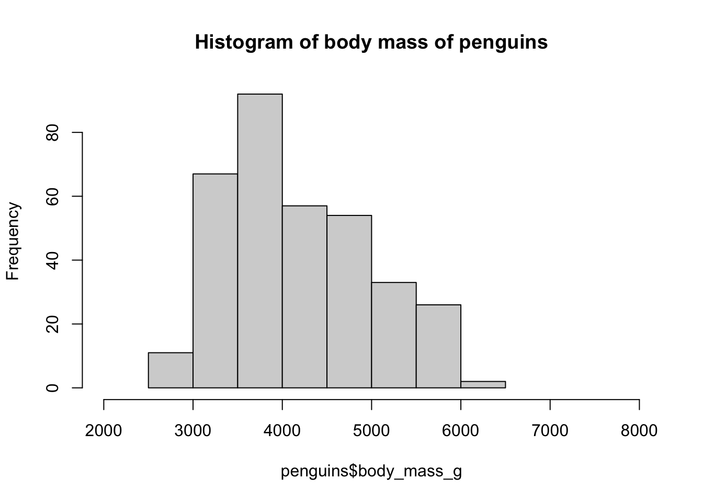
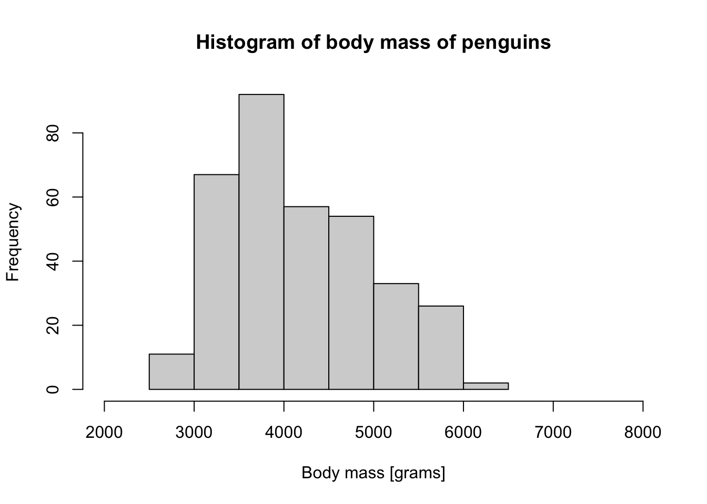
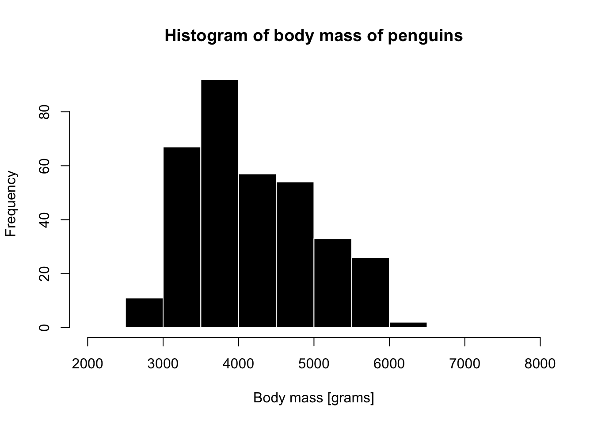
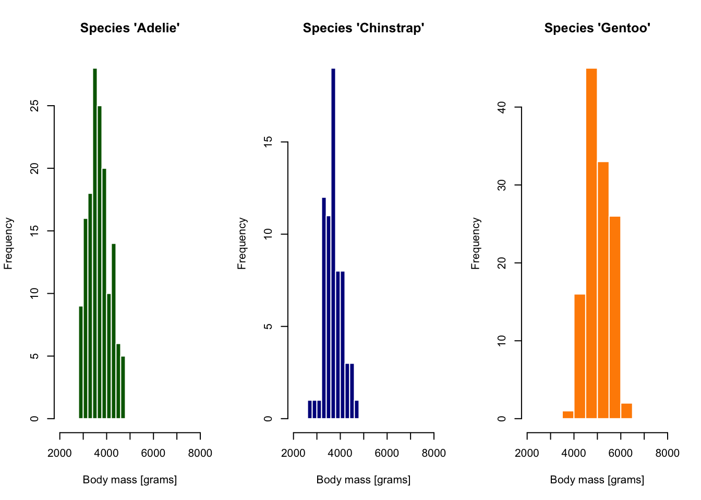
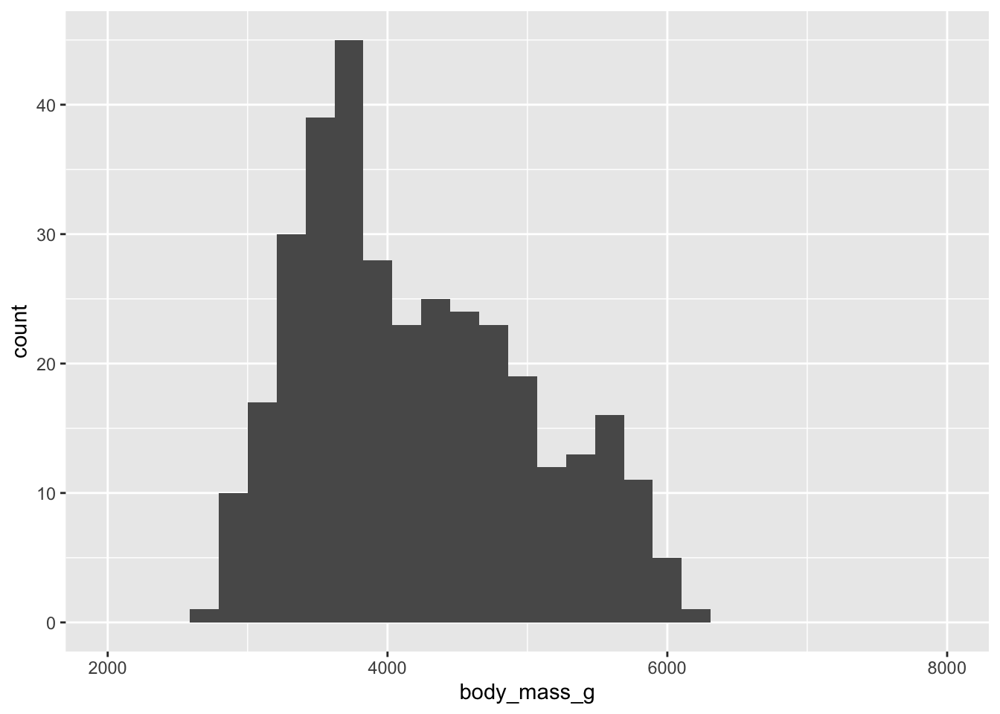

library(palmerpenguins)
head(penguins, 7)Visualization with ggplot2
(A few remarks and tips before the practical session)
R is the best technology for doing computational science
(Subjectively.)
ggplot2 is the most powerful visualization framework
(Objectively. üôÇ)
ggplot2 is a core tidyverse package
“Grammar of Graphics”
A formal syntax and grammar for describing visualizations
Let’s consider base R plotting
Attaching package: 'dplyr'The following objects are masked from 'package:stats':
filter, lagThe following objects are masked from 'package:base':
intersect, setdiff, setequal, union
Attaching package: 'palmerpenguins'The following objects are masked from 'package:datasets':
penguins, penguins_raw
Attaching package: 'kableExtra'The following object is masked from 'package:dplyr':
group_rows| species | island | bill_length_mm | bill_depth_mm | flipper_length_mm | body_mass_g | sex | year |
|---|---|---|---|---|---|---|---|
| Adelie | Torgersen | 39.1 | 18.7 | 181 | 3750 | male | 2007 |
| Adelie | Torgersen | 39.5 | 17.4 | 186 | 3800 | female | 2007 |
| Adelie | Torgersen | 40.3 | 18.0 | 195 | 3250 | female | 2007 |
| Adelie | Torgersen | NA | NA | NA | NA | NA | 2007 |
| Adelie | Torgersen | 36.7 | 19.3 | 193 | 3450 | female | 2007 |
| Adelie | Torgersen | 39.3 | 20.6 | 190 | 3650 | male | 2007 |
| Adelie | Torgersen | 38.9 | 17.8 | 181 | 3625 | female | 2007 |
A base R histogram
hist(penguins$body_mass_g)A base R histogram
hist(penguins$body_mass_g, xlim = c(2000, 8000))A base R histogram
hist(penguins$body_mass_g, xlim = c(2000, 8000),
main = "Histogram of body mass of penguins")
A base R histogram
hist(penguins$body_mass_g, xlim = c(2000, 8000),
main = "Histogram of body mass of penguins",
xlab = "Body mass [grams]")
A base R histogram
hist(penguins$body_mass_g, xlim = c(2000, 8000),
main = "Histogram of body mass of penguins",
xlab = "Body mass [grams]",
col = "black", border = "white")
A base R histogram
Code
par(mfrow = c(1, 3))
species_1 <- filter(penguins, species == "Adelie")
hist(species_1$body_mass_g, xlim = c(2000, 8000),
main = "Species 'Adelie'",
xlab = "Body mass [grams]",
col = "darkgreen", border = "white")
species_2 <- filter(penguins, species == "Chinstrap")
hist(species_2$body_mass_g, xlim = c(2000, 8000),
main = "Species 'Chinstrap'",
xlab = "Body mass [grams]",
col = "darkblue", border = "white")
species_3 <- filter(penguins, species == "Gentoo")
hist(species_3$body_mass_g, xlim = c(2000, 8000),
main = "Species 'Gentoo'",
xlab = "Body mass [grams]",
col = "darkorange", border = "white")
. . .
tidyverse provides “grammar for data manipulation”…
A “mini-language” with verbs like select(), filter(), etc.
(Helps us avoid “R bootcamp”-level nightmares.)
ggplot2 provides “grammar for visualizations”…
(To make visualizations easier in a similar sense.)
Layers in “Grammar of Graphics”

Illustration of Layers in Grammar of Graphics from Quebec Centre for Biodiversity Science
Layers in “Grammar of Graphics”
data— our data frame
aesthetics— “mapping” of columns to visual properties of a figure (x, oryaxes,color,shape, etc.)
geoms— graphical elements to be plotted (histograms, points, lines, etc.).
- many other customizations
A tiny example
A quick advertisement for the “layering” concept of ggplot2
What data to visualize?

How to visualize it? (x “aesthetic”)

How to visualize it? (x “aesthetic”)
On what dimensions?
What to visualize? (“geom”)
`stat_bin()` using `bins = 30`. Pick better value with `binwidth`.Warning: Removed 2 rows containing non-finite outside the scale range
(`stat_bin()`).Warning: Removed 2 rows containing missing values or values outside the scale range
(`geom_bar()`).
How to visualize it? (fill “aesthetic”)
`stat_bin()` using `bins = 30`. Pick better value with `binwidth`.Warning: Removed 2 rows containing non-finite outside the scale range
(`stat_bin()`).Warning: Removed 6 rows containing missing values or values outside the scale range
(`geom_bar()`).How to visualize it? (adding “facets”)
ggplot(penguins, aes(x = body_mass_g, fill = species)) +
xlim(2000, 8000) +
geom_histogram() +
facet_wrap(~ species)`stat_bin()` using `bins = 30`. Pick better value with `binwidth`.Warning: Removed 2 rows containing non-finite outside the scale range
(`stat_bin()`).Warning: Removed 6 rows containing missing values or values outside the scale range
(`geom_bar()`).What to visualize? (“geom” again)
More “layers”…
Today we’re going to learn ggplot2 on our metadata and IBD data
A bit of catch-up work on IBDs from yesterday
We need to make a copy of an IBD processing pipeline.
Let’s get started!
- Go to www.bodkan.net/simgen
- Click on “Visualization with ggplot2” in the left panel
- “Cheatsheets and handouts” section in the left panel has a single-page version of these slides and the dplyr cheatsheet and ggplot2 cheatsheets
- Open your RStudio and start working!
ggplot2 version 4.0.0 was released just a few days ago. ü§ûüò¨